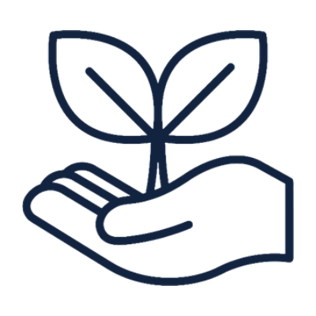
Sostenibilidad
Modelos de gestión que permiten que la intervención en un sitio siga viva cuando el proyecto termina.
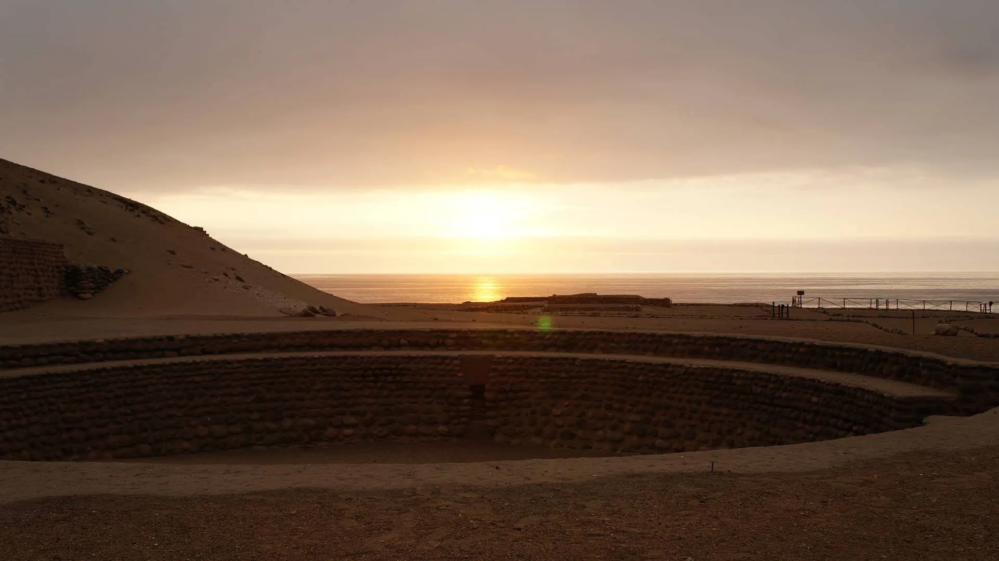
Estudio, protección y promoción del patrimonio arqueológico e histórico de América precolombina, desde una cosmovisión andina y de hemisferio SUR.
Quiénes somos
El Instituto de Altos Estudios Precolombinos promueve el estudio, protección y promoción del patrimonio arqueológico e histórico de América precolombina, mediante una cosmovisión andina y de hemisferio SUR.
El IDEP se alinea con los desafíos trazados para el siglo XXI: identidad, inclusión, descentralización y resiliencia; contribuyendo así con los Objetivos de Desarrollo Sostenible propuestos por la Organización de Naciones Unidas.

Valores institucionales

Modelos de gestión que permiten que la intervención en un sitio siga viva cuando el proyecto termina.
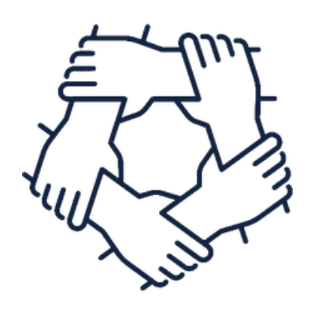
El trabajo se construye con las comunidades del territorio, no sobre ellas.
El patrimonio recuperado vuelve a la sociedad en forma de conocimiento, formación y oportunidad.
Objetivos estratégicos
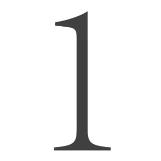
Promover la investigación académica y científica relacionada al patrimonio arqueológico e histórico.
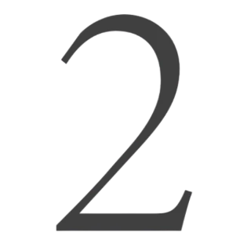
Rescatar, visibilizar y poner en valor obras y sitios de relevancia patrimonial.
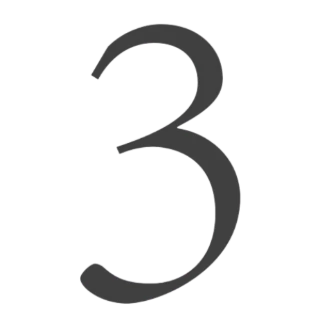
Fomentar la divulgación científica y cultural, en todas sus formas de expresión, mediante la realización de eventos con carácter participativo e inclusivo.
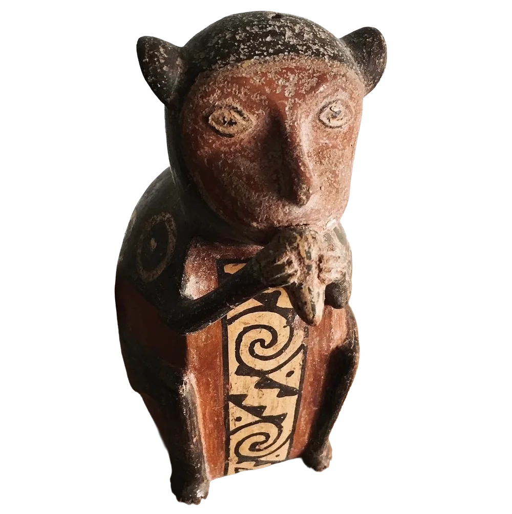
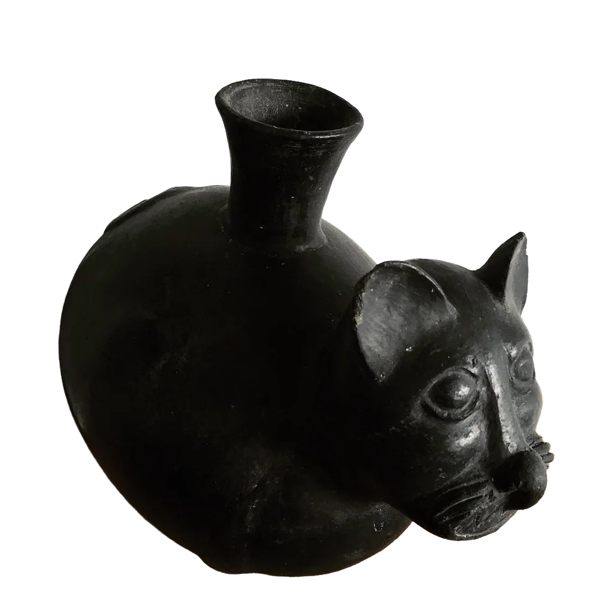
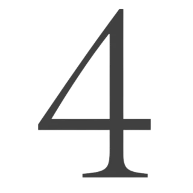
Crear un programa y fondo de salvamento patrimonial.
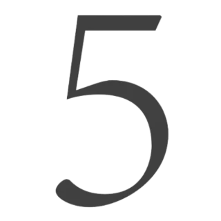
Administrar proyectos programáticos de carácter multidimensional, sustentables y con responsabilidad social.
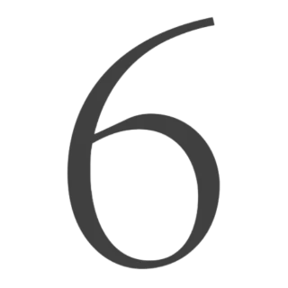
Gestionar recursos mediante cooperación nacional e internacional para la consecución de nuestros fines.
Visión
Al 2030, ser una organización pionera y referente en la reivindicación, investigación y difusión de los conocimientos y espiritualidad de las naciones andinas primigenias y de hemisferio SUR, fomentando el valor de su cosmovisión.
Misión
Promover el estudio, investigación, protección y difusión del patrimonio arqueológico e histórico de la América precolombina, desde una cosmovisión andina y de hemisferio SUR, contribuyendo a la preservación, comprensión y puesta en valor de su legado cultural.
Líneas de fomento
Salvaguarda, investigación, divulgación científica y promoción del patrimonio arqueológico binacional Ecuador–Perú.
El enfoque participativo y territorial asegura continuidad mediante:
Cada aporte se destina al financiamiento del fondo, la consecución de sus objetivos, autogestión y apoyo a sus comunidades.
Quiero apoyarSitios de interés
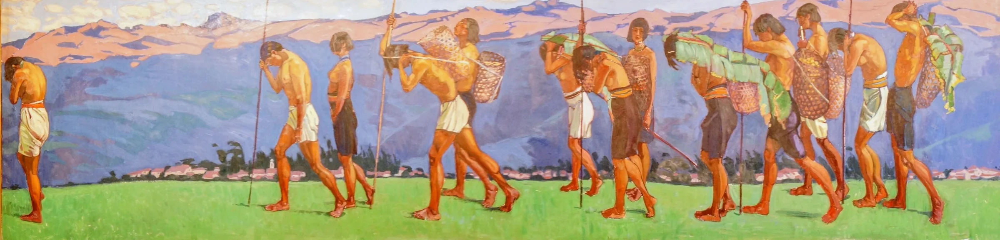
Directorio

Directora Ejecutiva
Ingeniera en Marketing, Universidad Tecnológica Equinoccial. Doctora en Administración Estratégica de Empresas, CENTRUM Graduate Business School, Pontificia Universidad Católica del Perú. Docente investigadora en la Facultad de Ciencias Administrativas y Contables de la Pontificia Universidad Católica del Ecuador y en la Universidad San Francisco de Quito, School of Business.
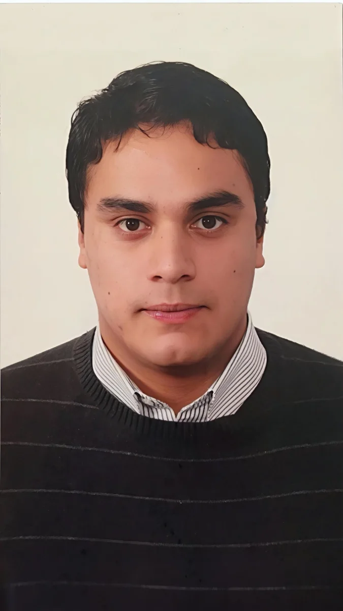
Presidente de Directorio · Coordinador General y de Proyectos
Bachiller en Derecho y Ciencias Políticas, Facultad de Derecho y Ciencias Políticas, Universidad Inca Garcilaso de la Vega. Abogado, Escuela Profesional de Derecho, Universidad Autónoma del Perú. Director y autor del proyecto editorial y obra científico literaria «Ensayo SUR».
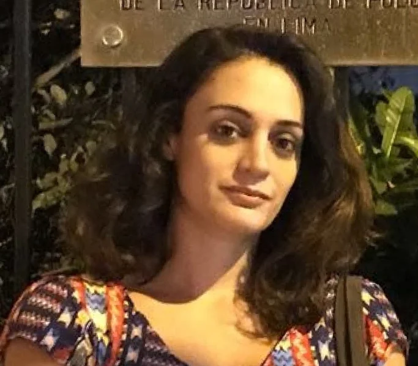
Coordinadora de Comunicación
Estudios en Comunicación Social y Periodismo en la Universidad del Azuay (Cuenca), la Universidad del Salvador (Buenos Aires) y la Universidad de las Américas (Quito). Experiencia en medios impresos y radio universitaria. Activista en comunidades indígenas de Bolivia, Perú y Ecuador. Autora de la obra teatral «Fierro Urco», ganadora del primer lugar local en el Festival Internacional de Artes Vivas, Loja.
Contacto
Para conocer sus propuestas de cooperación, vinculación académica o apoyo al Fondo de salvamento.